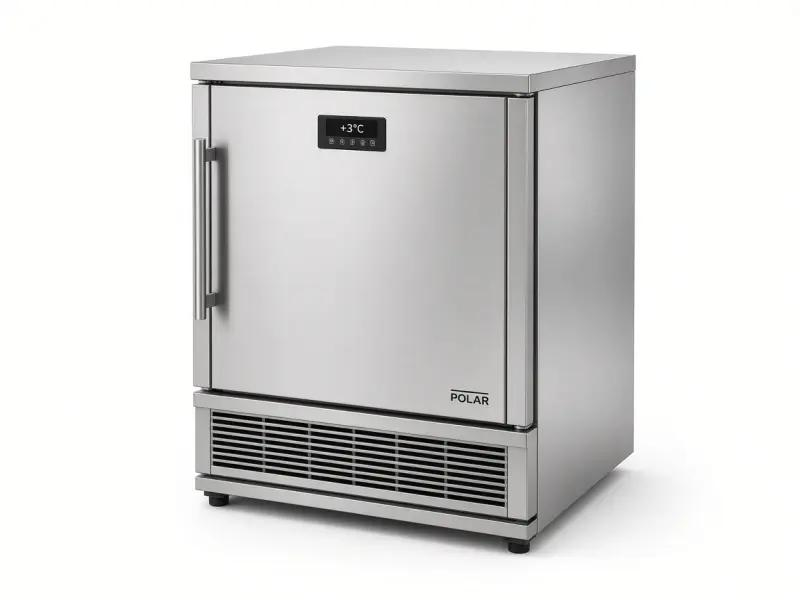

Commercial refrigeration only - 24/7 emergency - 25 mile radius
Polar commercial fridge repair for restaurants, pubs, takeaways and shops across North London and London. We probe temperatures, quote before we start, and attend 24/7 emergencies.

We provide both repair and service / maintenance for Polar commercial fridges. Polar cabinets sit in thousands of London trade kitchens because they are easy to buy and hard to live without once the prep line depends on them. When a Polar under-counter or upright climbs out of the chill band, you are not looking at a house inconvenience. You are looking at dumped food, a failed EHO visit, and a service you cannot run. Cold Direct is a commercial-only Polar fridge repair team covering North London and a 25 mile radius across London, Hertfordshire and Essex.
Polar fridge service London is a short PPM visit on G-series and similar trade cabinets: condenser clean, gasket check, probe on food not the display. Servicing after a deep clean stops flour from burying the fans before Friday. A service contract puts Polar under-counters on a round so one site is not always the emergency. We still do 24/7 Polar fridge repair when the prep fridge is already at ten degrees. Planned servicing is how takeaways keep Polar legal between EHO visits.
We attend Polar G-series and similar trade fridges in restaurants, pubs, bars, cafes, takeaways, sandwich shops, hotels and convenience stores. Common faults include a unit that runs but is not cold, one door warmer than the others, ice on the evaporator, water on the floor, a noisy condenser packed with flour and grease, or a controller that was knocked during a deep clean. We do not guess from the display. We check air and product temperatures with a calibrated probe and write the readings down so your manager has a record for the EHO.
A Polar fridge in a tight kitchen fails most often because the condenser cannot breathe. We pull the unit if access allows, clean the condenser, test fans, check door gaskets and the door switch, then quote labour and parts before we start. If a fan motor or gasket will get you through the weekend, we say so. If the compressor is finished, we say that too. You decide. We do not start extra work without the duty manager's say-so.
24/7 emergency Polar fridge repair matters on a Friday night in Camden, Islington or the City, and it matters at 6am in a takeaway in Tottenham, Edmonton or Walthamstow. The same 25 mile North London ring covers Barnet, Finchley, Wood Green, Enfield, Southgate, Palmers Green, Winchmore Hill, Cockfosters, Potters Bar, Borehamwood, Harrow, Watford, St Albans, Cheshunt, Waltham Cross, Harlow, Stratford, Romford, Ilford and the rest of Greater London. Call mobile 07983 759320 after hours. Use freephone 0800 112 3427 from a landline on the pass. Use London office 0203 952 4822 for planned multi-site work.
Polar under-counters on the pass get opened every minute of service. Polar uprights in the prep room hold dairy, cooked protein and desserts that an inspector will probe. If the display says two degrees and the food is eight, the display is lying. That is why we always bring a temperature probe. We also look at door seals that have gone hard, lights that have been left on, and stock piled against the evaporator so air cannot move. Those are commercial faults, not domestic ones, and they need a trade engineer who has seen Polar cabinets in London kitchens before.
We are commercial only. If you have a household Polar fridge, we will tell you on the first call so you do not wait for a van that will not attend. Trade Polar repair is what this page is for. Related pages: Adexa fridge repair London, Empire fridge repair London, fridge repair London, commercial fridge repair North London, Williams freezer repair.
Yes. Commercial Polar fridge repair is offered around the clock across our 25 mile North London radius. Call the mobile first after midnight.
Yes. We probe the cabinet and can leave written readings. That is the record an inspector wants, not a guess from the display.
No. Cold Direct is commercial only. If it is a house fridge, we will tell you on the call so you do not wait for a van that will not attend.